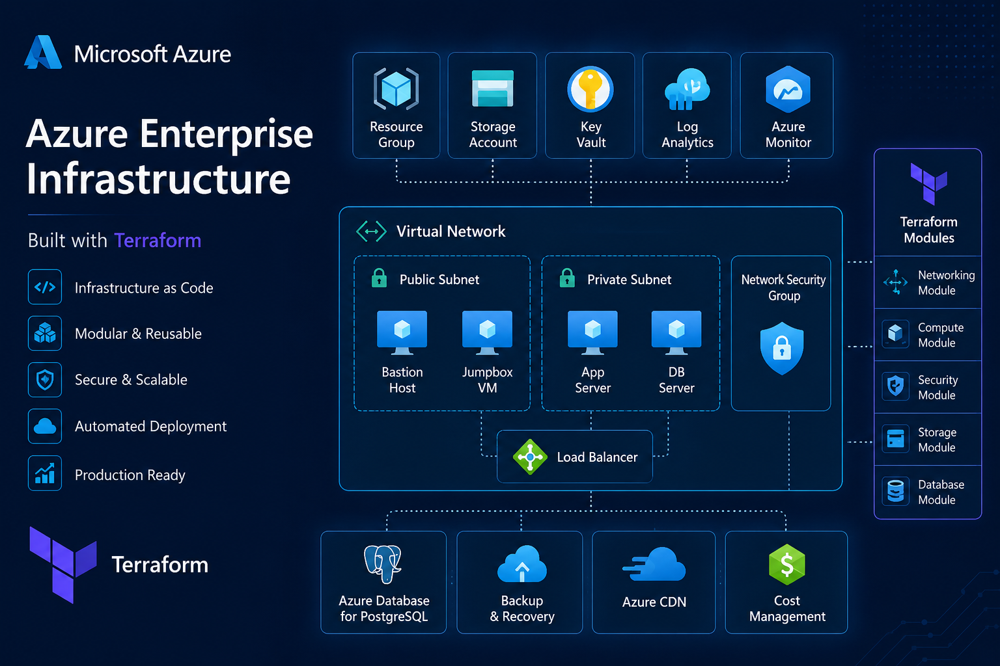
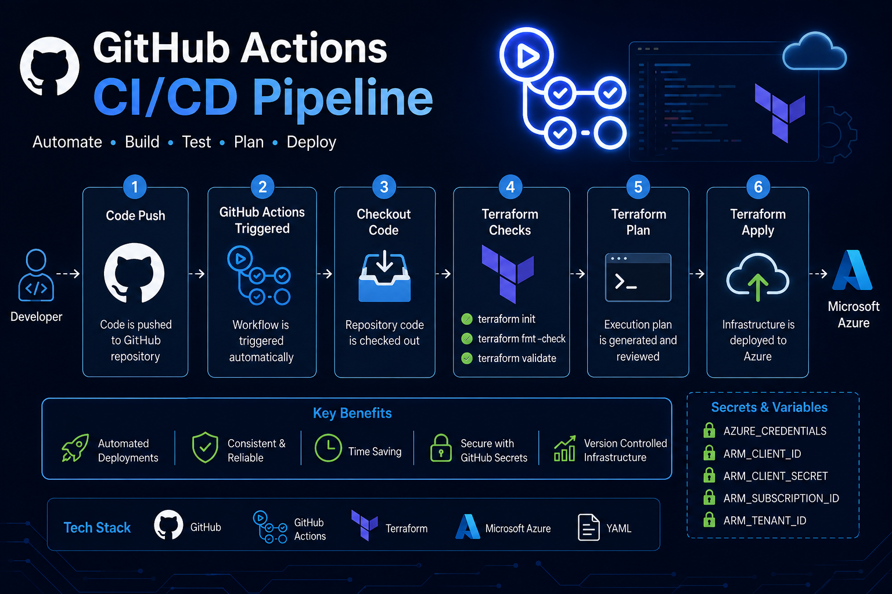

Hands-on DevOps and Cloud projects demonstrating Infrastructure as Code (IaC), CI/CD automation, Microsoft Azure provisioning and modern DevOps practices.

Azure Enterprise Infrastructure with Terraform
Designed and deployed a production-style Microsoft Azure infrastructure using Terraform following Infrastructure as Code (IaC) best practices. The project provisions Azure Virtual Networks, Subnets, Network Security Groups, Virtual Machines and Storage resources through reusable Terraform modules, enabling scalable, repeatable and automated cloud deployments.

GitHub Actions CI/CD Pipeline for Terraform
Built an automated CI/CD pipeline using GitHub Actions to streamline Terraform workflows for Microsoft Azure. The pipeline automatically validates Terraform code, checks formatting, generates execution plans and deploys infrastructure using GitHub-hosted runners. It also follows secure DevOps practices by storing Azure credentials in GitHub Secrets.
DevOps Deployment Pipeline
This portfolio follows a modern CI/CD workflow where every code change is automatically built and deployed using GitHub, GitHub Actions and Cloudflare Pages.
Development
Features and improvements are developed locally before being committed.
GitHub
Source code is version controlled and pushed to the GitHub repository.
GitHub Actions
Automated workflow validates, builds and prepares the project for deployment.
Cloudflare Pages
Cloudflare automatically deploys the latest production-ready build.
Live Website
Visitors always access the latest version through Cloudflare's global CDN with HTTPS enabled.
Professional Journey
DevOps Intern
DevOps Insider
Learning and working with Microsoft Azure, Linux, Git, GitHub, Terraform, Infrastructure as Code and cloud automation.
Bachelor of Technology
Computer Science Engineering
Built multiple academic and cloud projects while developing strong interest in DevOps and Cloud Computing.
Learning & Certifications
Continuously improving my DevOps and Cloud skills through hands-on practice and professional learning.
Microsoft Azure
Cloud Computing & Infrastructure
CompletedTerraform
Infrastructure as Code
CompletedLinux
System Administration
CompletedDocker
Currently Learning
In ProgressOpen Source & DevOps Portfolio
Explore my GitHub profile, open-source projects, Infrastructure as Code repositories, and DevOps automation work.
Loading...
Azure DevOps Engineer
Fetching GitHub profile...
--
Repositories
--
Followers
--
Following
--
Public Gists
Microsoft Azure
Terraform IaC
GitHub Actions
CI/CD Pipelines
Contribution Activity
Daily contribution history from GitHub.
DevOps Tech Stack
Azure Cloud
Experience provisioning Azure infrastructure using Infrastructure as Code.
CI/CD
Automated deployment workflows using GitHub Actions.
Terraform
Reusable modules and scalable infrastructure automation.
DevSecOps
Infrastructure validation and security-first deployment practices.
Featured DevOps Projects
Some of my highlighted Infrastructure as Code, Azure and CI/CD projects.
Azure Enterprise Infrastructure
Enterprise-grade Azure infrastructure built using Terraform with reusable modules, networking, virtual machines and Infrastructure as Code best practices.
View RepositoryGitHub Actions CI/CD Pipeline
Automated Terraform deployment pipeline using GitHub Actions, GitHub Secrets and Azure for continuous integration and delivery.
View RepositoryLatest GitHub Repositories
Live repositories fetched directly from GitHub API.
Career Highlights
Cloud
Hands-on experience with Microsoft Azure services.
Infrastructure as Code
Building reusable infrastructure using Terraform.
Automation
Learning CI/CD pipelines and deployment automation.
Projects
Developing cloud-focused and AI-based applications.
Let's Build Something Amazing Together
I'm open to internships, freelance projects and full-time DevOps opportunities.
gaurav25eng@gmail.com
Phone
+91 78605 91437
Location
Varanasi, Uttar Pradesh, India
Availability
Open for Opportunities